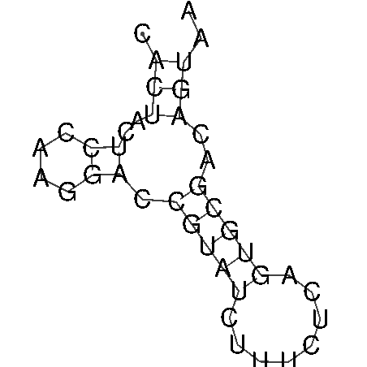

|
|
ovrnaplot |
Please help by correcting and extending the Wiki pages.
This is a port of the Vienna RNA package program RNAplot.
It reads the output of ovrnafold (RNA sequences and structures) and produces drawings of the secondary structure graph.
See the original documentation for the Vienna RNA package http://www.tbi.univie.ac.at/~ivo/RNA/
% ovrnaplot Draw RNA secondary structures Vienna RNAfold output file: ../ovrnafold-keep/rna1.ovrnafold Vienna RNAfold output file [rna1.ovrnaplot]: |
Go to the input files for this example
Go to the output files for this example
Draw RNA secondary structures
Version: EMBOSS:6.6.0.0
Standard (Mandatory) qualifiers:
[-structuresfile] infile Vienna RNAfold output file
[-outfile] outfile [*.ovrnaplot] Vienna RNAfold output file
Additional (Optional) qualifiers: (none)
Advanced (Unprompted) qualifiers:
-layout menu [naview] Layout (Values: radial (Simple
radial); naview (naview))
-optype menu [ps] Type (Values: ps (postscript); gml
(graph meta language); svg (scaleable vector
graphics); xrna (XRNA save file))
-pre string Pre-annotation (Any string)
-post string Post-annotation (Any string)
Associated qualifiers:
"-outfile" associated qualifiers
-odirectory2 string Output directory
General qualifiers:
-auto boolean Turn off prompts
-stdout boolean Write first file to standard output
-filter boolean Read first file from standard input, write
first file to standard output
-options boolean Prompt for standard and additional values
-debug boolean Write debug output to program.dbg
-verbose boolean Report some/full command line options
-help boolean Report command line options and exit. More
information on associated and general
qualifiers can be found with -help -verbose
-warning boolean Report warnings
-error boolean Report errors
-fatal boolean Report fatal errors
-die boolean Report dying program messages
-version boolean Report version number and exit
|
| Qualifier | Type | Description | Allowed values | Default | ||||||||
|---|---|---|---|---|---|---|---|---|---|---|---|---|
| Standard (Mandatory) qualifiers | ||||||||||||
| [-structuresfile] (Parameter 1) |
infile | Vienna RNAfold output file | Input file | Required | ||||||||
| [-outfile] (Parameter 2) |
outfile | Vienna RNAfold output file | Output file | <*>.ovrnaplot | ||||||||
| Additional (Optional) qualifiers | ||||||||||||
| (none) | ||||||||||||
| Advanced (Unprompted) qualifiers | ||||||||||||
| -layout | list | Layout |
|
naview | ||||||||
| -optype | list | Type |
|
ps | ||||||||
| -pre | string | Pre-annotation | Any string | |||||||||
| -post | string | Post-annotation | Any string | |||||||||
| Associated qualifiers | ||||||||||||
| "-outfile" associated outfile qualifiers | ||||||||||||
| -odirectory2 -odirectory_outfile |
string | Output directory | Any string | |||||||||
| General qualifiers | ||||||||||||
| -auto | boolean | Turn off prompts | Boolean value Yes/No | N | ||||||||
| -stdout | boolean | Write first file to standard output | Boolean value Yes/No | N | ||||||||
| -filter | boolean | Read first file from standard input, write first file to standard output | Boolean value Yes/No | N | ||||||||
| -options | boolean | Prompt for standard and additional values | Boolean value Yes/No | N | ||||||||
| -debug | boolean | Write debug output to program.dbg | Boolean value Yes/No | N | ||||||||
| -verbose | boolean | Report some/full command line options | Boolean value Yes/No | Y | ||||||||
| -help | boolean | Report command line options and exit. More information on associated and general qualifiers can be found with -help -verbose | Boolean value Yes/No | N | ||||||||
| -warning | boolean | Report warnings | Boolean value Yes/No | Y | ||||||||
| -error | boolean | Report errors | Boolean value Yes/No | Y | ||||||||
| -fatal | boolean | Report fatal errors | Boolean value Yes/No | Y | ||||||||
| -die | boolean | Report dying program messages | Boolean value Yes/No | Y | ||||||||
| -version | boolean | Report version number and exit | Boolean value Yes/No | N | ||||||||
CACUACUCCAAGGACCGUAUCUUUCUCAGUGCGACAGUAA .(((..((....)).(((((........)))))..))).. ( -3.50) |

| Program name | Description |
|---|---|
| banana | Plot bending and curvature data for B-DNA |
| btwisted | Calculate the twisting in a B-DNA sequence |
| einverted | Find inverted repeats in nucleotide sequences |
| ovrnaalifold | Calculate secondary structures for a set of aligned RNAs |
| ovrnaalifoldpf | Calculate secondary structures for a set of aligned RNAs (partition) |
| ovrnacofold | Calculate secondary structures of RNA dimers |
| ovrnacofoldconc | Calculate secondary structures of RNA dimers (concentrations) |
| ovrnacofoldpf | Calculate secondary structures of RNA dimers (partitioning) |
| ovrnadistance | Calculate distances between RNA secondary structures |
| ovrnaduplex | Predict RNA duplex (hybridization) sites and structure |
| ovrnaeval | Calculate energy of RNA sequences with a given secondary structure |
| ovrnaevalpair | Calculate energy of RNA sequences on given secondary structure |
| ovrnafold | Calculate min. energy RNA structure / pair probabilities (partition) |
| ovrnafoldpf | Calculate min. energy RNA structure / pair probabilities |
| ovrnaheat | Calculate specific heat of RNA melting |
| ovrnainverse | Find RNA sequences with a given secondary structure |
| ovrnalfold | Calculate locally stable secondary structures of RNAs |
| ovrnasubopt | Calculate suboptimal secondary structure of RNA |
| sirna | Find siRNA duplexes in mRNA |
| vrna2dfold | Calculate RNA structures and samples of k,l neighbourhoods |
| vrnaaliduplex | RNA duplex calculation for two sequence alignments |
| vrnaalifold | Calculate secondary structures for a set of aligned RNAs |
| vrnaalifoldpf | Calculate secondary structures for a set of aligned RNAs (partition) |
| vrnacofold | Calculate secondary structures of RNA dimers |
| vrnacofoldconc | Calculate secondary structures of RNA dimers (concentrations) |
| vrnacofoldpf | Calculate secondary structures of RNA dimers (partitioning) |
| vrnadistance | Calculate distances between RNA secondary structures |
| vrnaduplex | Predict RNA duplex (hybridization) sites and structure |
| vrnaeval | Calculate energy of RNA sequences with a given secondary structure |
| vrnaevalpair | Calculate energy of RNA sequences on given secondary structure |
| vrnafold | Calculate min. energy RNA secondary structures and pair probabilities |
| vrnafoldpf | Calculate min. energy RNA structures / pair probabilities (partition) |
| vrnaheat | Calculate specific heat of RNA melting |
| vrnainverse | Find RNA sequences with a given secondary structure |
| vrnalalifoldpf | Calculate secondary structures for a set of aligned RNAs (partition) |
| vrnalfold | Calculate locally stable secondary structures of RNAs |
| vrnalfoldz | Calculate locally stable secondary structures of RNAs plus zscore |
| vrnapkplex | Calculate RNA structures plus pseudoknots |
| vrnaplfold | Compute avg. pair probabilities for local base pairs in RNA sequences |
| vrnaplot | Draw RNA secondary structures |
| vrnasubopt | Calculate suboptimal secondary structures of RNAs |
Please report all bugs to the EMBOSS bug team (emboss-bug © emboss.open-bio.org) not to the original author.